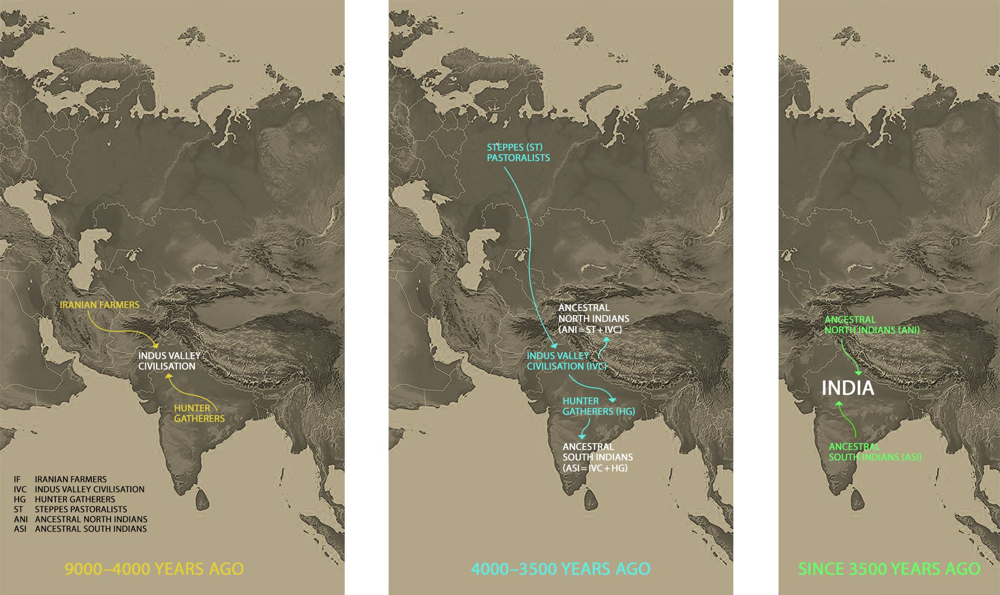

{kind=link}
{kind=link}
{kind=link}
The mAnasatarangiNIkAra and others have spoken on this here: MT1803, N201803, 20151212 (mindmup map, img, base file here), RK16, H17,20151219, 2015BX, 201209. Also see notes in the “current genetics section” below.
{kind=link}
The (more credible) AIT narrative of Bronze age events.
Old home
Indo-Aryans initially resided in the area around/ beyond the Black Sea, and were familiar with cold and long dawns (as evidenced by some parts of the Vedic texts - long ashvina-shastra to be recited at dawn). This is supported by genetic studies such as - N15. Even in the ancient past, they were a composite people [MTTW16].
Rapid radiation
They radiated out widely, merged with and dominated prior occupants in vast tracts of Eurasia. [Vid2015]
- Eurpoean migration: Nat, Arx.
- Half of Western European men descended from one Bronze Age ‘king’. “In Western Europe, related lineages within R1b-L11 expanded ~4.8–5.9 kya (Supplementary Fig. 14e), most markedly around 4.8 and 5.5 kya. The earlier of these times, 5.5 kya, is associated with the origin of the Bronze Age Yamnaya culture.” [N16 T16 ]
- Greek waves:
- “One of the causes for the end of the Mycenaean civilization is held to be the invasion of another Greek group the Dorians. In Greek epics these invasions are believed to represent the return of the Heracleidai, he descendents of Herakles who set out to conquer Greece from the other rulers. From the historical view point it is interesting to note that the use of the script declined after the Dorian invasion even though the Dorians were Greek speakers and could have easily adapted the Linear B themselves.” [MT11]
- Central Asian waves led to close interaction with mongoloid people .:
- More here.
Indo Iranian split
References: MT19.
From multiple lines of evidence IA-IR split could have been at least 1900 BCE, and likely earlier:
- As Damgaard linguistic supplement pointed out the earliest evidence for IA in Syria refers to mariannu in a tablet from Tell Leilān from 18th century BCE. This suggests IA were alreay making presence felt in region by then.
- The early Aryan names from West Asia are predominantly Indo-Aryan not Iranian suggesting that this branch was not undivided I-IR but already divided IA. So we have to place IA separation after that.
- Narasimhan et al & Damgaard et al’s data clearly indicates that there is east Asian admixture from 1500 BCE onwards. This type of admixture is seen in Eastern Iranics like kuShANa and shaka but not at all in Indics. This means that the Aryan group which invaded India should have done so before 1500 BCE. Given when the BMAC outliers have steppe admixture and when Harappan civ collapsed, we can say this is medially at 1700 BCE but could be 1900 BCE. This is quite possible given that matches devolution of mature IVC.
- “There is evidence for gene flow from Harappans to BMAC and also resident Harappan in BMAC, but not from BMAC to line leading to modern Indians. Thus, it appears that while the Indo-Aryan interacted with BMAC on route to India they did not mix with them to bring that ancestry to India. Of course Indo-Aryans who remained behind and later Iranians appear to have go on to mix with that ancestry. Given this it appear that the BMAC language will remain a bit mysterious.”
- The Lubotsky’s detailed study points out that the loans of Aryan into Finno-Ugric are not merely protoI-Ir or Ir but specifically show dialect developments of IA. There is no evidence for FU close to Indian subcontinent. Hence, I-Ir split should have happened further north even as these groups were operating in the Uralic zone. They were already nearing BMAC by ~2000 BCE; so this split was earlier.
Early IA material was composed in milieu where Iranics were part of the circle.
- The RV suggests that the term asura is not all negative: in fact more often positive than negative and used in positive sense similar to what later continued in avesta. maNDala 8 of RV and some paippalAda AV sUkta-s show parallels to avestan material.
- If IA they had already settled in the greater Panjab there is little evidence for Iranics in their proximity.
- In contrast in yajur brAhmaNa-s we do see strong deva-asura polarity mirrored in avesta. Hence, that split reflects a later period, which is more in line with a time of schism and separation.
- already there was dialectal divergence in the steppes leading towards IA when earliest layers of RV and AV-P were composed. The linguistic developments in India and compilation merely “updated” this old composition to a new register. This has happened even later: e.g. paippalAda in kAshmIra vs Odisha, and in case of mAdhyandina.
Genes, memes, temes
What genes, memes or temes put them at an advantage?
- Technological and biological theories
- “wheel in terms of technology & ideology played a serious role in this. The former especially because whatever else they did rapidly get from 1 place to another. " MT18.
- The people who spoke the Proto-Indo-European language lived at a critical time in a strategic place. They were positioned to benefit from innovations in transport, most important of these being the beginning of horseback riding and the invention of wheeled vehicles. [David W. Anthony in “Indo-Europeans, The Horse, the Wheel, and Language: How Bronze-Age Riders from the Eurasian Steppes Shaped the Modern World”]
- " It has been proposed that the horse and chariot tradition frequently mentioned by some poets associated with Chu state might be a further marker of this contact. It indeed appears that the chariot and the equestrian culture were transmitted on one or even more occasions from the Indo-Iranians. It appears that a robust equestrian warfare arose somewhat later than the chariot culture (often linked to the need for the stirrup for effective warfare). Proto-Indo-Iranian tradition, while aware of horseback riding and equestrian warfare, placed much greater emphasis on the chariot in war and does not seem to record a stirrup.” [MT]
- Lactose tolerance theory (discredited by genetic studies): Indo-Europeans developed a gene mutation that allowed them to digest milk even after being weaned, thus providing these nomads with a continuous and mobile source of nutrition.
- However, the dharma memeplex (../see here) is probably the most important competitive edge they had.
Textual provenance
- Spacio-temporal coordinates
- “RV shows clear knowledge of specific geothermal phenomena in the Caspian region. Further, its astronomical references compared with those of the Yajurveda and the Vedāñga Jyotiṣa point to dates certainly certainly earlier to ~3500-3200 YBP and even before the earliest Sintashta chariots, perhaps closer to 5000 YBP than 4000 YBP. These dates, while well-known to Hindu scholars since Tilak, are routinely ignored by white indologists as fantasies of the Hindus despite early acknowledgment of the same in their midst by Jacobi. … as discussed earlier it does match with other features like: 1) near lack of rice agriculture and dominance of barley; 2) the rarity of the sword and the gadā (which can be associated with Sintashta/Andronovo) as war weapons; 3) hardly any mention of the complex society with multiple service castes found in the Yajurveda brāhmaṇa-s and ritual. " [MT17]
- Economy and culture
- “we can paint some aspect of the lives of the ārya-s based on the RV: They were different from the later horse-centric pastoralists like the steppe Iranians (e.g. śaka-s) and Altaic peoples for whom the horse was primary and the cow marginal. In contrast, for the ārya-s the cow was central to their nutrition and economy and the horse played a central military role. While the ārya-s certainly rode horses, its military role in that period was apparently not so much as direct mount as much as for drawing the war-chariot. Accordingly, the chariot was an important symbol of power. This, expressed itself in the form of the chariot/horse races which were an important form of contest, entertainment and ritual. Further, unlike the later horse-centric steppe pastoralists the ārya-s did practice some agriculture even before they arrived in the Indian subcontinent and seemed to have focused on barley cultivation. Here, again cattle were clearly central; they drew the plow, concomitant with which seeding of the furrows took place. Thus, the economy of the ārya-s was necessarily a mixed one combining both cattle-rearing and agriculture. Other than horse with its special military role, goats and sheep were also reared with the latter supplying wool which is mentioned in the RV. However, notably there is no mention whatsoever of cotton.” [MT17]
Indian entry : IVC + Aryas = ANI
Genetic, linguistic and textual evidence indicates that culturally Indo-Aryan people entered and mixed with “proto-Indian” people around the Indus Valley civilization, forming a hybrid people (aka Ancenstral North Indian - ANI). Later still, they mixed with Dravidian (ancestral south Indian - ASI) and Asiatic people in the south and east.
- Etymology of “Arya”: KE2015.
- Timing: “1st they say that between 1700-1500 BCE there is East Asian admixture in C As Steppe pops which is absent in Indian groups.2nd they say that Steppe ancestry seen in BMAC first ~2100 BCE. So that gives us a rather narrow window of when the Arya-s reached the subcontinent.” [MT on 201803]
- This likely happened in collaboration with a faction of IVC elites, some of whom were later incorporated in the highest echolons of Arya society. The soma cult, a distinct feature of I-Ir branch, might have come from them.
Multiple waves
- “We suspect that similarly there were multiple waves of Indo-European invasions into India. Most of these were waves were Indo-Aryans or at best Iranians, though there might have additionally even been a kentum type non-Indo-Iranian wave – sort of a mirror image of the western branch of Indo-Aryans (Mittani superstrate) that appeared in West Asia [Footnote 2]. We discern several such waves based on Indo-Aryan literary tradition: 1) The pa~nchajana (who may have come in more than one wave); 2) the ikShvAku (these two are early waves); 3) the shalva-s; 4) the pANDava-s” [MT11]
- “The late RV sarayu and gomati were to the west. They were later moved east perhaps indeed with the movement of ikShavAkus” [TW].
- " As we have tentatively argued before there appears to have been an older layer involving a civil war within the kuru-pa~nchAla confederation in core AryAvarta. In this confrontation, the kuru-s might have destroyed the pa~nchAla-s, perhaps via the action of the feral bharadvAja brAhmaNa ashvatthAman. The larger canvas of these events appears to have included conflicts with another Indo-Aryan state of the salva-s who were initially defeated by the kuru-s and subsequently destroyed by the yadu-s under kR^iShNa devakIputra and his allies. Another group, the nAga-s, called by some as non-Aryan, were in reality most certainly culturally Arya. This group was also contending for power in this period against the yadu-s led by kR^iShNa. The pANDu-s coming from the Iranian border zone appear to have subsequently emerged as key players. Initially they allied with the yadu-s to gain territory from the nAga-s. This sparked off a long standing feud between the latter and the pANDu-s with some nAga groups allying themselves to the pANDu-s and other fiercely opposing them. Subsequently, the pANDu alliance destroyed the surviving kuru power in alliance with the remnants of the pa~nchAla-s and the yadu-s. Finally they placed themselves as rulers after completing the destruction of the nAga power. Their joint queen draupadI appear to symbolically represent the shrI or the wealth and power of the old pa~nchAla monarchs, which was now in the hands of the pANDu-s though the former had no successors…. This secondary wave along with others might be associated with the transformation of Vedic India into the early “classical” India wherein new religious systems, concepts and deities were superimposed upon the earlier shrauta system formalized in the kuru-pa~nchAla realm. It is conceivable that archaeologically they correspond to the famous Painted Grey Ware culture of northern India. Despite their huge cultural effect, their own direct political contribution was limited. There are few India dynasties that consistently claim origin from the pANDu-s.” [MT]
- First wave
- " the study of the ethnogenesis of the Indians suggests that the main Indo-Aryan contribution came from the invasion of a population close to the Yamnaya of the early steppe Bronze age rather than the Sinthasta or its successors Andronovo culture which descended from the Yamnaya. This is also more consistent with the estimates for the dates of expansion of the “Indian” branch of the R1a1 Y-haplogroup which is associated with the invasion of India by the ārya-s.” [MT]
Early Arya society
varNa formation
Late Rg vedic hymns and the other veda-s show distinct varNa-s.
- The four major ones (brAhmaNa, kShatriya, vaiShya, shUdra) and other subcategories - rathakAra-s, niShAda-s and chaNDAla-s.
- iranian Avesta as well (athravan, rathestar, vastrya on one hand with huiti as 4th - a later term)
- Earlier, only the brAhmaNa, kShatriya, vaiShya varNa-s may have existed.
- Dumézil hypothesized that Proto-Indo-European society comprised three main groups corresponding to three distinct functions the function of sovereignty (which inturn comprised of formal and priestly categories), the military function and the function of productivity. [wiki]
- For notes on how a hierarchical structure might have yielded a competitive advantage, see here.
Contrast with other invasions
- Many later invasions (Greeks, Huns, Shakas, Turks) were relatively much smaller in comparison to this IA invasion.
- Islamic invasion of a pagan population (and one with a well established conservative social structure) is hardly comparable to the invasion of one pagan population over another (especially one with presumably lesser organizational/ conservative strengths). Further, one pagan population quite willingly accepts the cults and mores of another (eg: popularity of Isis cults in Europe).
- Unlike the European Christian invasion of North America and Australia, Arya invasion was not genocidal in nature -rather accommodative.
- Regarding later spread to South East Asia and NE India: Filipino to Tamil, there are a lot (going well beyond half the vocabulary) of sanskrit/ IA loan words and ideas. If you had an influx of scale similar to that of IA invasion of North India or Sinhala invasion of Lanka - you would see more drastic replacement after a millenium of settlement. As significant as Hindu migrations were to these other regions, they were not of similar scale.